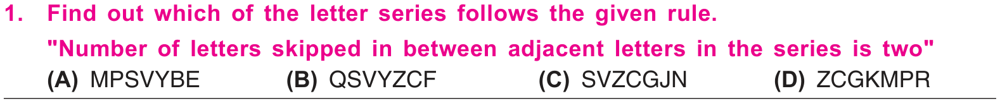
Find out which of the letter series follows the given rule.
"Number of letters skipped in between adjacent letters in the series is two"
MPSVYBE
QSVYZCF
SVZCGJN
ZCGKMPR
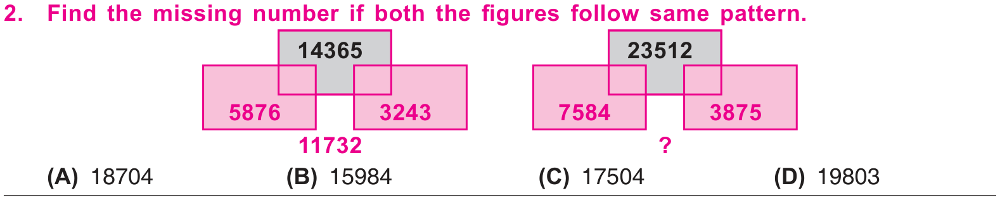
Find the missing number if both the figures follow same pattern.
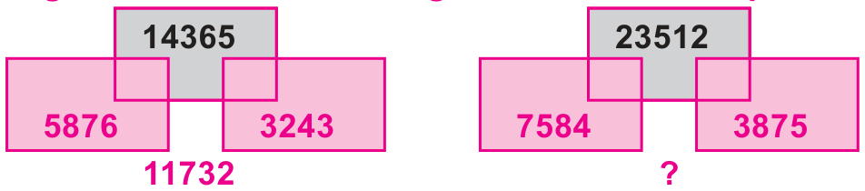
18704
15984
17504
19803
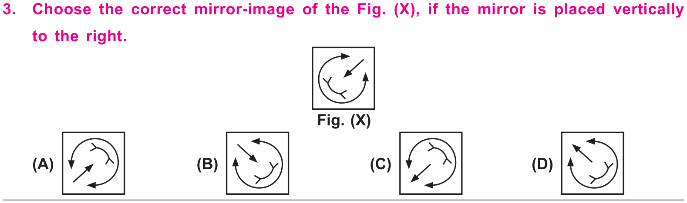
Choose the correct mirror-image of the Fig. (X), if the mirror is placed vertically to the right.
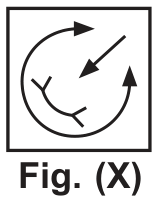
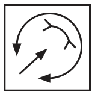
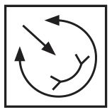
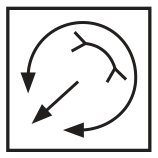
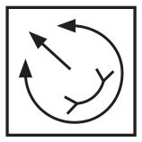
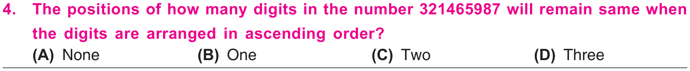
The positions of how many digits in the number 321465987 will remain same when the digits are arranged in ascending order?
None
One
Two
Three
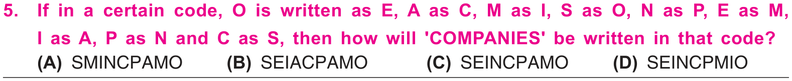
If in a certain code, O is written as E, A as C, M as I, S as O, N as P, E as M, I as A, P as N and C as S, then how will 'COMPANIES' be written in that code?
SMINCPAMO
SEIACPAMO
SEINCPAMO
SEINCPMIO
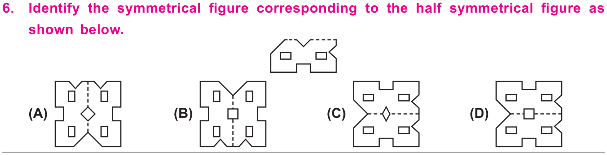
Identify the symmetrical figure corresponding to the half symmetrical figure as shown below.
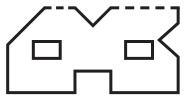
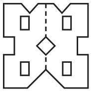
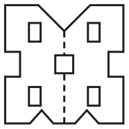
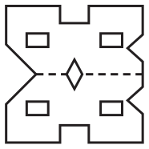
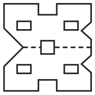
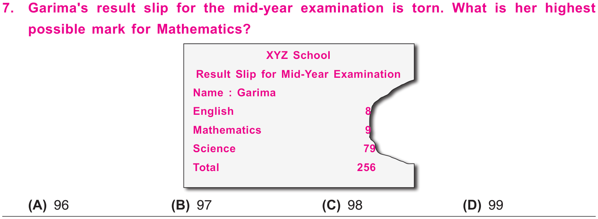
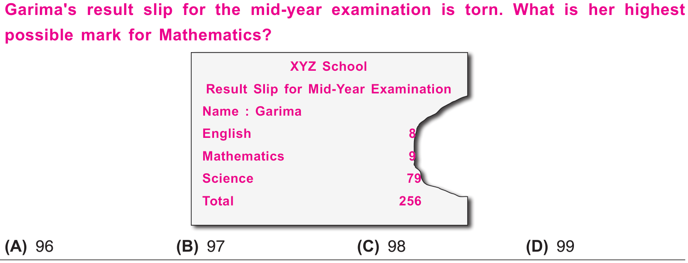
Option A
Option B
Option C
Option D
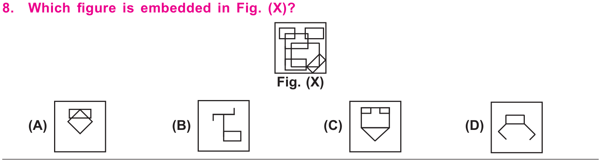
Which figure is embedded in Fig. (X)?
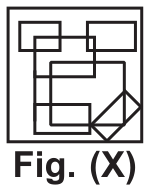
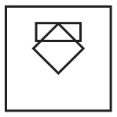
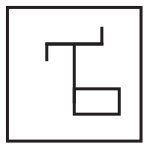
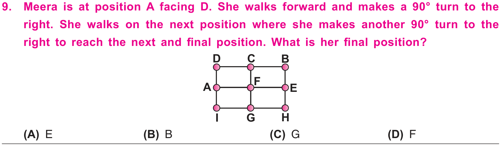
Meera is at position A facing D. She walks forward and makes a 90° turn to the right. She walks on the next position where she makes another 90° turn to the right to reach the next and final position. What is her final position?
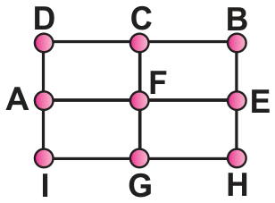
E
B
G
F
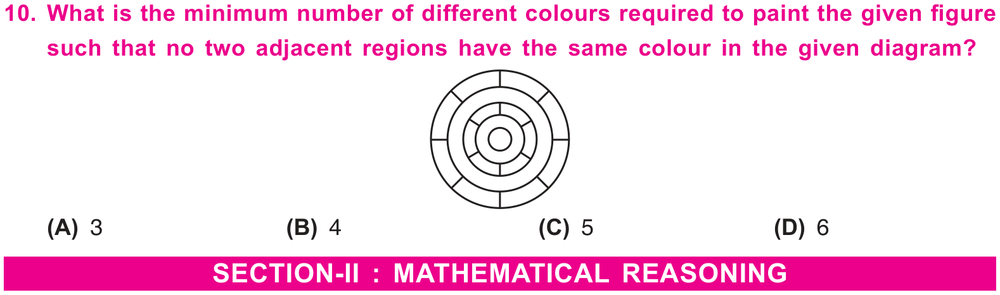
What is the minimum number of different colours required to paint the given figure such that no two adjacent regions have the same colour in the given diagram?
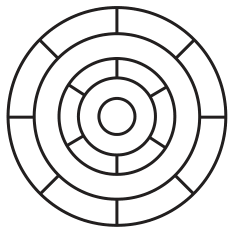
3
4
5
6
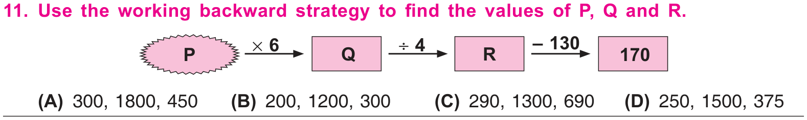
Use the working backward strategy to find the values of P, Q and R.
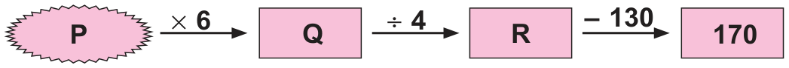
300, 1800, 450
200, 1200, 300
290, 1300, 690
250, 1500, 375
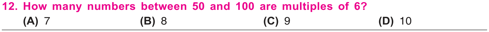
How many numbers between 50 and 100 are multiples of 6?
7
8
9
10
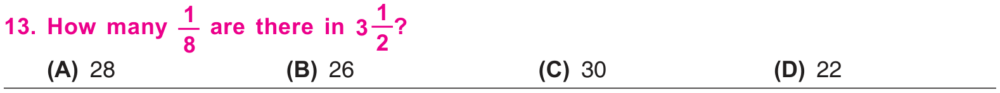
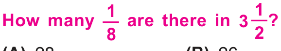
28
26
30
22
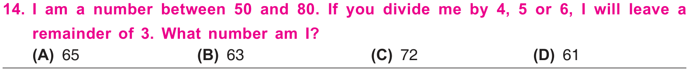
I am a number between 50 and 80. If you divide me by 4, 5 or 6, I will leave a remainder of 3. What number am I?
65
63
72
61
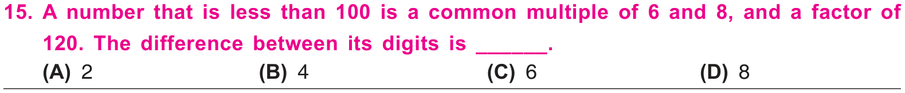
A number that is less than 100 is a common multiple of 6 and 8, and a factor of 120. The difference between its digits is ______.
2
4
6
8
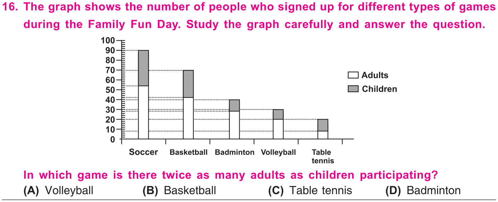
The graph shows the number of people who signed up for different types of games during the Family Fun Day. Study the graph carefully and answer the question.
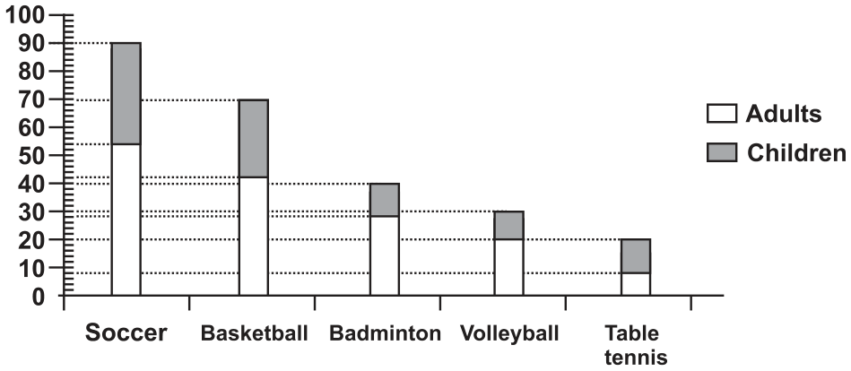
In which game is there twice as many adults as children participating?
Volleyball
Basketball
Table tennis
Badminton
G is a factor of 48 but not a multiple of 4. If G is larger than 5, find G.
24
12
6
8
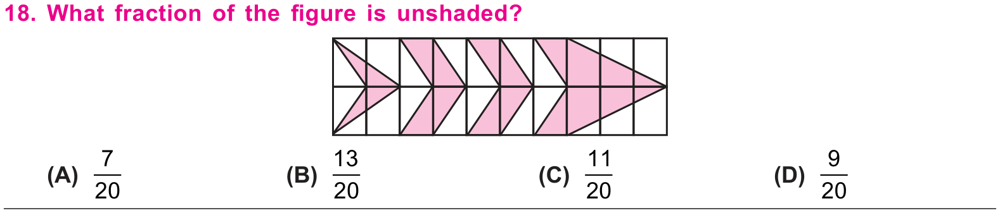
What fraction of the figure is unshaded?
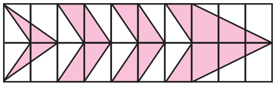
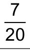
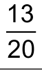
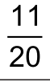
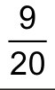
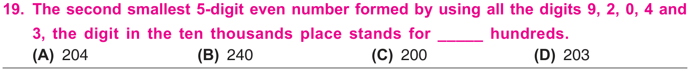
The second smallest 5-digit even number formed by using all the digits 9, 2, 0, 4 and 3, the digit in the ten thousands place stands for _____ hundreds.
204
240
200
203
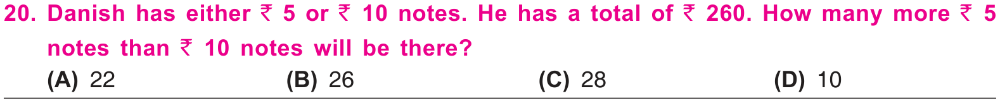
Danish has either ₹ 5 or ₹ 10 notes. He has a total of ₹ 260. How many more ₹ 5 notes than ₹ 10 notes will be there?
22
26
28
10
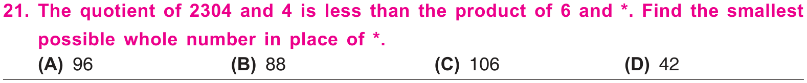
The quotient of 2304 and 4 is less than the product of 6 and *. Find the smallest possible whole number in place of *.
96
88
106
42
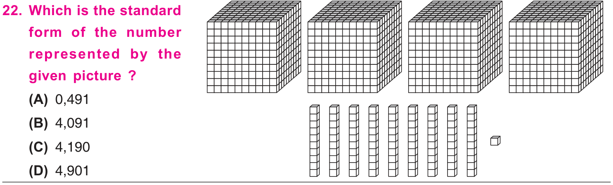
Which is the standard form of the number represented by the given picture ?
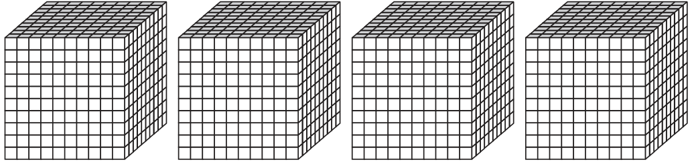
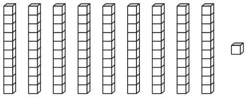
0,491
4,091
4,190
4,901
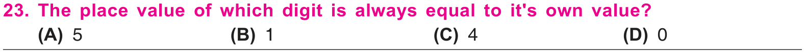
The place value of which digit is always equal to it's own value?
5
1
4
0
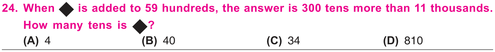
When is added to 59 hundreds, the answer is 300 tens more than 11 thousands.
How many tens is
4
34
810
It was 23:20 when Jay reached home. If he spent 1 hr 42 mins on the bus ride, what time did he board the bus?
9:30 p.m.
10:38 p.m.
9:38 p.m.
9:38 a.m.
The time shown in Prerna's watch was 15 minutes slow. School started at 12:45 and Prerna was right on time. What was the time shown on Prerna's watch when she reached school?
12:30
13:00
1:00
13:05
₹ 16
₹ 28
₹ 30
₹ 36
Rishab's weight is 28 kg. Deepali's weight is 4 kg more than Rishab's. What fraction of Rishab's weight is Deepali's weight?
Shilpa is four times as old as Raj. Riya is 6 years younger than Raj. If their total ages is 72, how much older is Shilpa than Riya?
48 years
45 years
42 years
39 years
Mary bought a new exercise book and she numbered all the pages. She wrote 151 digits in all. How many pages were there in the exercise book?
80
90
95
91
A group of 6 boys went to a carnival. The boys paired up for the bumper car rides so that each boy will ride with each of the other boys once. How many rides did the group take in all?
12
13
14
15
₹ 720
₹ 1280
₹ 1600
₹ 900
Isha bought 80 peaches. She found out that out of every 10 peaches, 2 are rotten and had to be thrown away. How many peaches did she have left in the end?
70
74
64
68
In a zoo, there were 15 lions and peacocks altogether. The number of heads was 25 less than the number of legs. How many more peacocks were there?
20
15
10
5
What is the total length of wire needed to form the given figure?
83 cm
78 cm
88 cm
92 cm